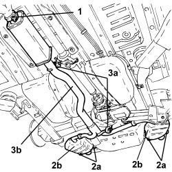
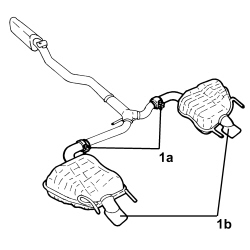
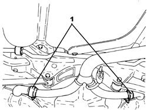
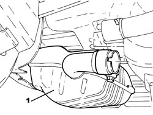

1076B22 REAR EXHAUST SILENCERS - LEFT OR RIGHT - R.R.
- Path
- Procedures > 10 ENGINE > 1076 EXHAUST PIPES AND SILENCERS > 1076B EXHAUST PIPES AND SILENCERS > 1076B22 REAR EXHAUST SILENCERS - LEFT OR RIGHT - R.R.
- Kind
- repair procedure (removal / refitting; the operation number is the code)
- Applies to
- all engines; all production periods
- Interactive page
- https://sloeber94.github.io/elrnDB-aBrrSpdr/en/#/946001958
Applies to: engines: 3.2 JTS; all production periods
 Removing
Removing
 Refitting
Refitting- Position the vehicle on a lift.
1. Loosen the collar fastening the front silencer to the catalyzer assembly.
2. Release the rear silencers (2b) from the flexible mountings (2a).
3. Release the silencer assembly (3b) from the flexible mountings (3a) and remove it.

Applies to: engines: 3.2 JTS; all production periods
1. Loosen the collars (1a) and remove the exhaust silencers (1b) from the front exhaust silencer pipe.

Applies to: engines: 3.2 JTS; all production periods
Refitting
Removing- Attach the two rear exhaust silencers to the front silencer pipe and secure them using the collars.
- Place the silencer assembly in position, attaching the front exhaust silencer to the catalyzer assembly and connecting the flexible support mountings.
- Tighten the collar connecting the front silencer to the catalyzer assembly.
- Remove the vehicle from the lift.
Applies to: engines: 2.2 JTS, 2.4 JTD 20v; all production periods
Removing
Refitting- Position the vehicle on a lift.
1. Loosen the collars securing the rear exhaust silencers to the front exhaust silencer.

Applies to: engines: 2.2 JTS, 2.4 JTD 20v; all production periods
1. Remove the rear exhaust silencers releasing them from the flexible mountings and from the front exhaust silencer.

Applies to: engines: 2.2 JTS, 2.4 JTD 20v; all production periods
Refitting
Removing- Place the rear exhaust silencers in their housings and secure them to the flexible supports.
- Tighten the collars securing the rear exhaust silencers to the front exhaust silencer.
- Remove the vehicle from the lift.